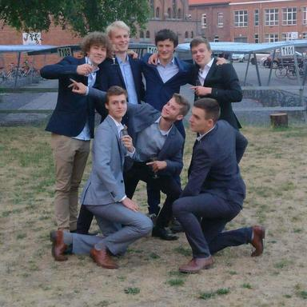

Wie ben ik?
Mijn naam is Joppe Minjauw en ik ben geboren op 30 maart 2000 in Deinze. Ik heb 1 broer en 2 zussen, die alle drie al werken. Mijn broer zit ook in de informatica sector, het is vooral door hem dat mijn interesse voor de computerwereld zo groot is.
In het lager onderwijs heb ik het 3e leerjaar overgeslagen, vandaar dat ik nu al in het hoger onderwijs zit. In het middelbaar heb ik 6 jaar latijn gevolgd en mijn diploma behaald in Latijn-Wetenschappen.